토목기사 (2013-09-28 기출문제)
1과목: 응용역학
1. 탄성계수 E= 2.1×106kg/cm2, 푸아송비 v=0.25 일 때 전단탄성계수의 값으로 옳은 것은?
- 8.4×105kg/cm2
- 9.8×105kg/cm2
- 1.7×106kg/cm2
- 2.1×106kg/cm2
(정답률: 78%)

2. 그림과 같이 폭(b)와 높이(h)가 모두 12cm인 2등변삼각형의 x, y축에 대한 단면상승모멘트 Ixy는?(오류 신고가 접수된 문제입니다. 반드시 정답과 해설을 확인하시기 바랍니다.)
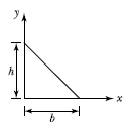
- 624cm4
- 864cm4
- 1,072cm4
- 1,152cm4
(정답률: 54%)
3. 보의 길이 가 L일 때 자유단의 처짐이 Δ라면, 처짐이 4Δ가 되려면 보의 길이 L은 약 몇 배가 되어야 하는가?
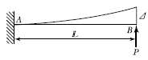
- 1.6배
- 1.8배
- 2.0배
- 2.2배
(정답률: 75%)
4. 단면적이 2cm × 2cm 인 정사각형 봉에 축방향력 2,000kgf가 작용할 때 수직선에 대하여 30° 경사진 단면에서의 수직응력(σθ)은?
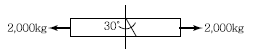
- 624kg/cm2
- 567kg/cm2
- 425kg/cm2
- 375kg/cm2
(정답률: 54%)
5. 전단력 V가 작용하고 있는 그림과 같은 보의 단면에서 τ1 - τ2의 값으로 옳은 것은?
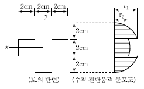
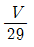
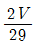
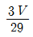
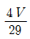
(정답률: 54%)
6. 바닥은 고정, 상단은 자유로운 기둥의 좌굴 형상이 그림과 같을 때 임계하중은 얼마인가?
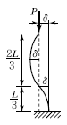
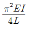
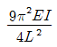
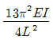
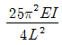
(정답률: 77%)
7. 다음 트러스에서 부재력 U의 값으로 옳은 것은?
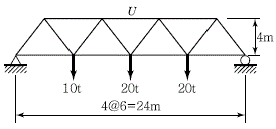
- 52.5t(압축)
- 63.5t(압축)
- 74.5t(압축)
- 85.5t(압축)
(정답률: 62%)
8. 그림과 같은 3활절 아치에서 D점에 연직하중 20t이 작용할 때 A점에 작용하는 수평반력 HA는?
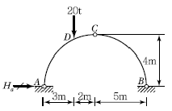
- 5.5t
- 6.5t
- 7.5t
- 8.5t
(정답률: 81%)
9. 그림과 같은 강봉이 2개의 다른 정사각형 단면적을 가지고 하중 P를 받고 있을 때 AB가 1,500kg/cm2의 수직응력(Normal Stress)을 가지면, BC에서의 수직응력(Normal Stress)은 얼마인가?
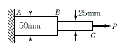
- 1,500kg/cm2
- 3,000kg/cm2
- 4,500kg/cm2
- 6,000kg/cm2
(정답률: 55%)
10. 그림과 같은 내민보에 대하여 지점 B에서의 처짐각을 구하면? (단, EI＝일정)
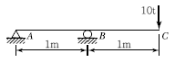
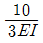
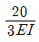
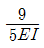
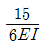
(정답률: 59%)
11. 휨강성이 EI인 프레임의 C점의 수직처짐 δc를 구하면?
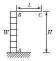
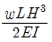
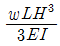
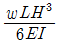
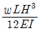
(정답률: 64%)
12. 같은 재료로 만들어진 반경 r인 속이 찬 축과 외반경 r이고 내 반경 0.6r인 속이 빈 축이 동일 크기의 비틀림 모멘트를 받고 있다. 최대 비틀림 응력의 비는?
- 1：1
- 1：1.15
- 1：2
- 1：2.15
(정답률: 82%)
13. 그림과 같이 단순보의 A점에 휨모멘트가 작용하고 있을 경우 A점에서의 전단력의 절댓값 크기는?
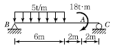
- 7.2t
- 10.8t
- 12.6t
- 25.2t
(정답률: 63%)
14. 그림과 같은 게르버보에서 하중 P만에 의한 C점의 처짐은? (단, 여기서 EI는 일정하고 EI=2.7×1011kg ∙ cm2이다.)
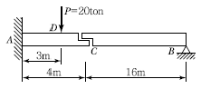
- 2.7cm
- 2.0cm
- 1.0cm
- 0.7cm
(정답률: 58%)
15. 부정정 구조물의 해석법에 대한 설명으로 옳지 않은 것은?
- 변위법은 변위를 미지수로 하고, 힘의 평형방정식을 적용하여 미지수를 구하는 방법으로 강성도법이라고도 한다.
- 부정정력을 구하는 방법으로 변위일치법과 3연모멘트법은 응력법에 속하며, 처짐각법과 모멘트분배법은 변위법으로 분류된다.
- 3연 모멘트법은 부정정 연속보의 2경간 3개 지점에 대한 휨모멘트 관계방정식을 만들어 부정정을 해석하는 방법이다.
- 처짐각법으로 해석할 때 축방향력과 전단력에 의한 변형은 무시하고, 절점에 모인 각 부재는 모두 강절점으로 가정한다.
(정답률: 59%)
16. 그림과 같은 단순보에 하중이 우에서 좌로 이동 할 때 절대 최대 휨모멘트는 얼마인가?
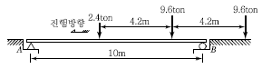
- 23.86ton∙m
- 25.86ton∙m
- 27.86ton∙m
- 29.86ton∙m
(정답률: 43%)
17. 다음 도형의 도심축에 관한 단면 2차 모멘트를 Ig, 밑변을 지나는 축에 관한 단면 2차 모멘트를 Ix라 하면 Ix/Ig값은?
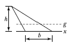
- 1
- 2
- 3
- 4
(정답률: 63%)
18. 다음 그림과 같은 직사각형 단면 기둥에서 e＝10cm인 편심하중이 작용할 경우 발생하는 최대 압축응력은? (단, 기중은 단주로 간주한다.)
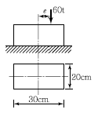
- 300kg/cm2
- 350kg/cm2
- 400kg/cm2
- 600kg/cm2
(정답률: 49%)
19. 아래 그림과 같은 1차 부정정보에서 B점으로부터 전단력이“0”이 되는 위치(X)의 값은?
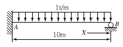
- 3.75m
- 4.25m
- 4.75m
- 5.25m
(정답률: 67%)
20. 그림과 같이 단순보에 하중 P가 경사지게 작용시 A점에서의 수직반력 VA를 구하면?
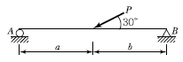
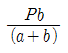
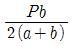
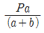
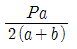
(정답률: 67%)
2과목: 측량학
21. A, B 간의 비고를 구하기 위해 (1), (2), (3)경로에 대하여 직접고저측량을 실시하여 다음과 같은 결과를 얻었다. A, B 간 고저차의 최확값은?
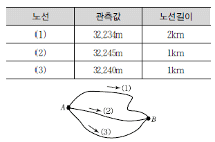
- 32.236m
- 32.238m
- 32.241m
- 32.243m
(정답률: 72%)
22. 건설공사에 필요한 지형도 제작에 주로 이용하는 방법과 거리가 먼 것은?
- 투시도에 의한 방법
- 일반측량에 의한 방법
- 사진측량에 의한 방법
- 수치지형 모형에 의한 방법
(정답률: 58%)
23. 원곡선에서 교각이 30°이고 곡선 반지름이 500m이며 곡선시점의 추가거리가 150m일 때, 곡선종점의 추가거리는?
- 404.675m
- 411.799m
- 426.743m
- 430.451m
(정답률: 59%)
24. 현재 GPS의 의사거리 결정에 영향을 주는 오차 와 거리가 먼 것은?
- 위성의 궤도오차
- 위성의 시계오차
- 위성의 기하학적 위치에 따른 오차
- SA 오차
(정답률: 71%)
25. 도로의 곡선지점(B.C)의 위치가 중심말뚝 No.12+4.41m이고 곡선종점(E.C)의 위치가 중심말뚝 No.19+11.52m일 때에 시단현(δ1)과 종단현(δ2)에 대한 편각은? (단, 곡선반경＝100m, 중심말뚝의 간격＝20m)(오류 신고가 접수된 문제입니다. 반드시 정답과 해설을 확인하시기 바랍니다.)
- δ1=1° 36ʹ⑤ʺ, δ2=3° 18ʹ01ʺ
- δ1=4° 07ʹ41ʺ, δ2=2° 25ʹ46ʺ
- δ1=1° 36ʹ⑤ʺ, δ2=2° 25ʹ46ʺ
- δ1=4° 07ʹ41ʺ, δ2=3° 18ʹ01ʺ
(정답률: 39%)
26. 기준면으로부터 지반고(단위：m)를 관측한 결과가 그림과 같다. 정지고를 2.8m로 하기 위하여 필요한 토량은? (단, 각각의 직사각형 면적은 200m2이고, 토량의 변화는 무시한다.)(오류 신고가 접수된 문제입니다. 반드시 정답과 해설을 확인하시기 바랍니다.)
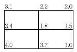
- 100m3
- 195m3
- 200m3
- 295m3
(정답률: 34%)
27. 평판의 도상에 허용되는 제도오차를 0.3mm라할 때, 1/1, 000의 축척에 의한 측량에서 도상점과 지상측점과의 중심맞추기 오차(편심 거리)의 최대 허용 범위는?
- 10cm
- 15cm
- 20cm
- 25cm
(정답률: 61%)
28. 수평각 관측을 실시할 때에 망원경을 정위와 반위의 상태로 관측하여 평균값을 취하여 제거할수 있는 오차는?
- 눈금의 오차
- 지구곡률 오차
- 연직축의 오차
- 수평축의 오차
(정답률: 36%)
29. 단곡선 측설에서 교각 I＝90°, 반지름 R＝100m인 경우에 외할(E )은 몇 m인가?
- 39.22m
- 40.34m
- 41.42m
- 42.54m
(정답률: 70%)
30. 각관측 방법 중 배각법에 관한 설명으로 옳지 않은 것은? (여기서, α：시준오차, β：읽기오차, n：반복횟수)
- 방향각법에 비하여 읽기 오차의 영향을 적게 받는다.
- 수평각 관측법 중 가장 정확한 방법으로 3등 삼각측량에 주로 이용된다.
- 1각에 생기는 오차
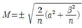
이다. - 1개의 각을 2회 이상 반복관측하여 관측한 각도를 모두 더하여 평균을 구하는 방법이다.
(정답률: 54%)
31. A의 좌표가 (x＝3,120.26m, y＝4,216.32m)이고, B의 좌표가(x＝1,829.54m, y＝3,833.82m) 일 때
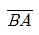
의 방향각은?- 16° 30ʹ25ʺ
- 163° 29ʹ39ʺ
- 196° 30ʹ25ʺ
- 343° 29ʹ39ʺ
(정답률: 43%)
32. 수위관측소를 설치하는 위치조건으로 옳지 않은 것은?
- 잔류, 역류가 적은 장소
- 상ㆍ하류가 곡선으로 연결되어 흐름의 진입과 진출이 보이지 않는 장소
- 수위가 교각이나 기타 구조물에 의한 영향을 받지 않는 장소
- 지천의 합류점에서는 불규칙한 수위의 변화가 없는 장소
(정답률: 75%)
33. 항공사진의 특수 3점에 해당되지 않는 것은?
- 주점(主点)
- 연직점(鉛直点)
- 등각점(等角点)
- 표정점(標定点)
(정답률: 70%)
34. 중력이상의 주된 원인에 대한 설명으로 옳은 것은?
- 지하 물질의 밀도가 고르게 분포되어 있지 않기 때문이다.
- 지하수의 흐름이 불규칙하기 때문이다.
- 태양과 달의 인력 때문이다.
- 잦은 화산 폭발 때문이다.
(정답률: 62%)
35. 토적곡선(Mass Curve)을 작성하는 목적으로 가장 거리가 먼 것은?
- 토량의 운반거리 산출
- 토공기계의 선정
- 토량의 배분
- 교통량 산정
(정답률: 65%)
36. 사변형삼각망의 어느 관측각에 있어서 각 조건에 의해 조정한 결과 그 조정각이 30°00ʹ00ʺ였다. 변조건에 의한 조정계산을 위해 표차를 구할 경우, 이 조정각에 대한 표차는 약 얼마인가?
- 2.6×10-6
- 3.6×10-6
- 4.5×10-6
- 5.8×10-6
(정답률: 30%)
37. 다각측량의 각 관측값 오차배분에 대한 설명으로 옳지 않은 것은?
- 각 관측의 경중률이 다를 경우 그 오차는 경중률에 따라 달리 배분한다.
- 각 관측값의 오차가 허용범위보다 클 경우에는 다시 관측하여야 한다.
- 각 관측의 정확도가 같을 때는 오차를 각의 크기에 비례하여 배분한다.
- 관측변 길이의 역수에 비례하여 각각의 각에 배분한다.
(정답률: 43%)
38. 레벨의 불완전 조정에 의하여 발생한 오차를 최소화하는 가장 좋은 방법은?
- 왕복 2회 측정하여 그 평균을 취한다.
- 기포를 항상 중앙에 오게 한다.
- 시준선의 거리를 짧게 한다.
- 전시, 후시의 표척거리를 같게 한다.
(정답률: 73%)
39. 도로의 곡선부에서 확폭량(Slack)을 구하는 식으로 옳은 것은? (단, R：차선 중심선의 반지름, L：차량 앞면에서 차량의 뒤축까지의 거리)
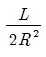
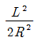
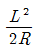
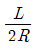
(정답률: 63%)
40. 항공사진 재촬영 요인의 판정기준에 대한 설명으로 틀린 것은?
- 항공기의 고도가 계획촬영고도의 5% 정도 벗어날 때
- 인접한 사진 축척이 현저히 차이 날 때
- 구름이 사진에 나타날 때
- 필름의 신축으로 입체시에 지장이 있을 때
(정답률: 65%)
3과목: 수리학 및 수문학
41. 직경 1mm인 모세관의 모관 상승 높이는? (단, 물의 표면장력은 74dyne/cm, 접촉각은 8°)
- 15mm
- 20mm
- 25mm
- 30mm
(정답률: 46%)
42. 직경 20cm의 관내 유속을 Chezy의 평균유속공식으로 구하려 할 때 유속계수 C는? (단, 마찰손실계수 f＝0.03)
- 35.5
- 40.9
- 51.1
- 60.2
(정답률: 68%)
43. 지름 200mm인 관로에 축소부 지름이 120mm인 벤투리미터(Venturimeter)가 부착되어 있다. 두 단면의 수두차가 1.0m, c＝0.98일 때의 유량은?
- 0.0⑤25m3/sec
- 0.⑤25m3/sec
- 0.525m3/sec
- 5.250m32/sec
(정답률: 62%)
44. 지하수 흐름에서 Darcy 법칙에 관한 설명 중 옳은 것은?
- 정상상태이면 난류영역에서도 적용된다.
- 투수계수(수리전도계수)는 지하수의 특성과 관계가 있다.
- Darcy 공식에 의한 유속은 공극 내 실제유속의 평균치를 나타낸다.
- 대수층의 모세관 작용은 이 공식에 간접적으로 반영되었다.
(정답률: 57%)
45. 그림은 정수위투수계에 의한 투수계수 측정 모습이다. h＝100cm, L＝20cm, Q＝45cm3/sec이고 시료의 단면적 A=300cm2일 때 투수계수는?
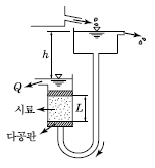
- 0.004cm/sec
- 0.03cm/sec
- 0.2cm/sec
- 1.0cm/sec
(정답률: 64%)
46. 비교적 평야지역에서 강우계의 관측 분포가 균일하고 500km2 정도의 작은 유역에 발생한 강우에 대한 적합한 유역 평균강우량 산정법은?
- Thiessen의 가중법
- Talbot의 강도법
- 산술평균법
- 등우선법
(정답률: 61%)
47. 그림과 같은 액주계에서 수은면의 차가 10cm이었다면 A, B점의 수압차는? (단, 수은의 비중＝13.6, 무게 1kg＝9.8N)
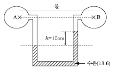
- 133.5kPa
- 123.5kPa
- 13.35kPa
- 12.35kPa
(정답률: 50%)
48. 다음 중 물의 순환과정에 대한 순서로 옳게 나열한 것은?
- 증발→강수→차단→증산→침투→침루→유출
- 증발→강수→증산→차단→침투→침루→유출
- 증발→강수→차단→증산→침루→유출→침투
- 증발→강수→증산→차단→침투→유출→침루
(정답률: 58%)
49. 얻어진 강우 기록으로부터 우량의 값, 유역면적 및 강우 계속시간 등의 관계를 규명하는 것은?
- 유출함수법
- DAD 해석
- 단위도법
- 비우량해석
(정답률: 74%)
50. 그림과 같은 복단면(複斷面) 수로에 물이 흐를 때 윤변(潤邊)은?
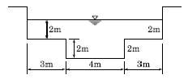
- 18m
- 16m
- 14m
- 12m
(정답률: 67%)
51. 단위유량도를 작성하고자 할 때 필요한 3가지 기본 가정이 아닌 것은?
- 산술평균가정
- 일정 기저시간가정
- 중첩가정
- 비례가정
(정답률: 69%)
52. k가 엄격히 말하면 월류수심 h등에 관한 함수이지만, 근사적으로 상수라 가정할 때에 직사각형 위어(Weir)의 유량 Q와 h의 일반적인 관계로 옳은 것은?
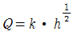
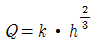
- Q=k ∙ h
(정답률: 70%)
53. 유효강우량(Effective Rainfall)에 대한 설명으로 옳은 것은?
- 지표면 유출에 해당하는 강우량이다.
- 총 유출에 해당하는 강우량이다.
- 기저유출에 해당하는 강우량이다.
- 직접 유출에 해당하는 강우량이다.
(정답률: 63%)
54. 유체의 흐름에 대한 설명으로 옳지 않은 것은?
- 이상유체에서 점성은 무시된다.
- 점성이 있는 유체가 계속해서 흐르기 위해서는 가속도가 필요하다.
- 정상류의 흐름상태는 위치변화에 따라 변화하지 않는 흐름을 의미한다.
- 유관(Stream Tube)은 유선으로 구성된 가상적인 관이다.
(정답률: 51%)
55. 흐르는 물속에 물체가 놓여 있을 때, 물체의 형상에 기인하여 후방에 와(渦, Vortex) 등의 후류 발생영역이 나타나 작용하게 되는 힘을 일컫는 용어는?
- 양력(전 저항력)
- 마찰항력(표면저항)
- 압력항력(압력저항)
- 조파항력(조파저항)
(정답률: 32%)
56. 비에너지와 한계수심에 관한 설명으로 옳지 않은 것은?
- 비에너지가 일정할 때 한계수심으로 흐르면 유량이 최소가 된다.
- 유량이 일정할 때 비에너지가 최소가 되는 수심이 한계수심이다.
- 비에너지는 수로바닥을 기준으로 하는 흐름의전 에너지이다.
- 유량이 일정할 때 직사각형 단면 수로 내 한계 수심은 최소 비에너지의 2/3이다.
(정답률: 54%)
57. 댐 여수로 설계시 중요한 사항으로 국부적인 저압부가 발생하여 여수로 표면에 심각한 손상을 발생시키는 현상을 무엇이라 하는가?
- 수격작용
- 공동현상
- 서징(Surging)
- 도수현상
(정답률: 50%)
58. 길이 5m, 폭 2m인 4각형 단면 수조의 중간에 수직판을 설치하여 수조의 길이를 1：4로 나누어 막았다. 이때 수직판의 아래쪽에 단면적70cm2인 오리피스를 설치하여 물을 유출시킨다. 작은 수조의 수면이 큰 수조의 수면보다3.5m 높을 때부터 2개 수조의 수면차가 70cm가 될 때까지 소요되는 시간은? (단, 오리피스의유량계수는 0.61로 한다.)
- 175sec
- 192sec
- 252sec
- 271sec
(정답률: 34%)
59. 관수로 계산에서 l/D이 몇 이상이면 마찰손실이외의 소손실을 무시할 수 있는가? (단, D관의 지름, l：관의 길이)
- 100
- 300
- 1,000
- 3,000
(정답률: 54%)
60. 개수로에서 수면형(水面形)이 배수곡선으로 되는 수심 h의 범위를 나타내는 것은? (단, ho：등류수심, hc：한계수심, h：고려하는 임의의 수심)
- hc＞ho＞h
- hc＞h ＞ho
- h＞ho＞hc
- ho＞h ＞hc
(정답률: 54%)
4과목: 철근콘크리트 및 강구조
61. 단면 400mm×400mm인 중심축 하중을 받는 기둥(단주)에 4-D25(Ast＝2,027mm2)의 축방향 철근이 배근되어 있다. 이 기둥의 변형률이ε＝ 0.001에 도달하게 될 때, 축방향 하중의 크기는 약 얼마인가?(단, 콘크리트의 응력 fc=15MPa, fck＝24MPa, fy＝300MPa이다.)
- 1,782kN
- 2,775kN
- 3,787kN
- 4,783kN
(정답률: 49%)
62. 아래 그림과 같은 독립확대기초에서 1방향 전단에 대해 고려할 경우 위험단면의 계수전단력 (Vu)은? (단, 계수하중 Pu＝1,500kN이다.)
- 255kN
- 387kN
- 897kN
- 1,210kN
(정답률: 36%)
63. 콘크리트 구조물에서 비틀림에 대한 설계를 하려고 할 때, 계수비틀림모멘트를 계산하는 방법에 대한 다음 설명 중 잘못된 것은? (단, d는 유효깊이)
- 균열에 의하여 내력의 재분배가 발생하여 비틀림모멘트가 감소할 수 있는 부정정구조물의 경우 최대 계수비틀림모멘트를 감소시킬 수 있다.
- 철근콘크리트 부재에서 받침부로부터 d이내에서 집중된 비틀림모멘트가 작용하면 위험단면은 받침부의 내부 면으로 하여야 한다.
- 프리스트레스트 부재에서 받침부로부터 d이내에 위치한 단면은 d에서 계산된 계수비틀림 모멘트보다 작지 않은 비틀림모멘트에 대하여 설계하여야 한다.
- 정밀한 해석을 수행하지 않은 경우, 슬래브로부터 전달되는 비틀림 하중은 전체 부재에 걸쳐균등하게 분포하는 것으로 가정할 수 있다.
(정답률: 54%)
64. 정착구와 커플러의 위치에서 프리스트레싱 도입 직후 포스트텐션 긴장재의 응력은 얼마 이하로 하여야 하는가? (단, fpu는 긴장재의 설계기 준인장강도)
- 0.6fpu
- 0.74fpu
- 0.70fpu
- 0.85fpu
(정답률: 60%)
65. 다음 그림의 고장력 볼트 마찰이음에서 필요한 볼트 수는 최소 몇 개인가?(단, 볼트는 M22(φ＝22mm), F10T를 사용하며, 마찰이음의 허용력은 48kN이다.)
- 3개
- 5개
- 6개
- 8개
(정답률: 61%)
66. 단면이 400mm×500mm인 직사각형이고, 길이가 6m인 철근콘크리트 부재가 있다. 철근은 단면 도심에 대하여 대칭으로 배치하였으며, 단면적은 As＝2,000mm2이다. 콘크리트의 건조 수축으로 인한 콘크리트의 수축응력은? (단, 콘크리트의 건조 수축률은 0.00015이고, 콘크리트 및 철근의 탄성계수는 각각 Ec＝2.85×104MPa, Es＝2.0×105MPa이며, 이 부재의 변형은 구속되어 있지 않다.)
- 0.14MPa
- 0.28MPa
- 14MPa
- 28MPa
(정답률: 26%)
67. 철근콘크리트 부재에서 전단철근이 부담해야 할 전단력이 400kN일 때 부재축에 직각으로 배치된 전단철근의 최대간격은? (단, Av＝700mm2, fyt＝350MPa, fck＝21MPa, bw＝400mm, d＝560mm)
- 140mm
- 200mm
- 300mm
- 343mm
(정답률: 52%)
68. 깊은 보(Deep Beam)의 강도는 다음 중 무엇에 의해 지배되는가?
- 압축
- 인장
- 휨
- 전단
(정답률: 60%)
69. 강도 설계에 있어서 안전율을 위한 강도 감소계수 φ 의 값으로 틀린 것은?
- 인장지배 단면：0.85
- 전단：0.75
- 비틀림모멘트：0.75
- 나선철근으로 보강된 압축지배 단면：0.65
(정답률: 64%)
70. bw ＝200mm, Vd＝500mm, As＝1,000mm2인단철근 직사각형보를 강도설계법으로 해석할때 압축연단에서 중립축까지의 거리(c)는? (단, fck＝35MPa, fy＝300MPa이다.)
- 63mm
- 67mm
- 72mm
- 78mm
(정답률: 57%)
71. 보통중량콘크리트 설계기준강도(fck)가 35MPa이며 철근의 계항복강도가 400MPa이면 직경이 25mm인 압축이형철근의 기본정착길이 (Idb)는 얼마인가?
- 2237mm
- 358mm
- 423mm
- 430mm
(정답률: 50%)
72. 그림과 같은 용접 이음에서 이음부의 응력은 얼마인가?
- 140MPa
- 152MPa
- 168MPa
- 180MPa
(정답률: 72%)
73. PSC 보를 RC 보처럼 생각하여, 콘크리트는 압축력을 받고 긴장재는 인장력을 받게 하여 두 힘의 우력 모멘트로 외력에 의한 휨모멘트에 저항 시킨다는 생각은 다음 중 어느 개념과 같은가?
- 응력개념(Stress Concept)
- 강도개념(Strength Cocnept)
- 하중평형개념(Load Balancing Concept)
- 균등질 보의 개념(Homogeneous Beam Concept)
(정답률: 57%)
74. 아래 그림과 같은 PSC보에 활하중(WL) 18kN/m이 작용하고 있을 때 보의 중앙단면 상연에서 콘크리트 응력은?(단, 프리스트레스 힘(P)은 3,375kN이고, 콘크리트의 단위중량은 25kN/m3을 적용하여 자중을 산정하며, 하중계수와 하중조합은 고려하지 않는다.)
- 18.75MPa
- 23.63MPa
- 27.25MPa
- 32.42MPa
(정답률: 47%)
75. 그림과 같은 임의 단면에서 등가 직사각형 응력분포가 빗금친 부분으로 나타났다면 철근량 As는 얼마인가? (단, fck＝21MPa, fy＝400MPa)
- 874mm2
- 1,161mm2
- 1,543mm2
- 2,109mm2
(정답률: 57%)
76. 그림과 같이 설계된 복철근 직사각형 보의 경우 공칭 휨모멘트 강도 Mn은? (단, fck＝28MPa, fy＝350MPa, As＝4,500mm2, Asʹ＝1,800mm2이며, 압축·인장 철근 모두 항복한다고 가정)
- 665.14kN ∙ m
- 687.16kN ∙ m
- 690.27kN ∙ m
- 695.35kN ∙ m
(정답률: 64%)
77. 철근의 이음방법에 대한 설명 중 옳지 않은 것은? (단, Id는 정착길이)
- 인장을 받는 이형철근의 겹침이음길이는 A급 이음과 B급 이음으로 분류하며, A급 이음은 1.0Id이상, B급 이음은 1.3Id이상이며, 두 가지 경우 모두 300mm 이상이어야 한다.
- 인장 이형철근의 겹침이음에서 A급 이음은 배치된 철근량이 이음부 전체 구간에서 해석결과 요구되는 소요 철근량의 2배 이상이고, 소요 겹침이음길이 내 겹침이음된 철근량이 전체 철근 량의 1/2 이하인 경우이다.
- 서로 다른 크기의 철근을 압축부에서 겹칩이음 하는 경우, D41과 D51 철근은 D35 이하 철근과 의 겹침이음은 허용할 수 있다.
- 휨부재에서 서로 직접 접촉되지 않게 겹침이음 된 철근은 횡방향으로 소요 겹칩이음길이의 1/3 또는 200mm 중 작은 값 이상 떨어지지 않아야 한다.
(정답률: 40%)
78. 옹벽의 설계 및 해석에 대한 설명으로 틀린 것은?
- 앞 부벽식 옹벽에서 앞 부벽은 직사각형 보로 설계한다.
- 부벽식 옹벽의 전면벽은 3변 지지된 2방향 슬래브로 설계할 수 있다.
- 옹벽 저판의 설계는 슬래브의 설계방법 규정에 따라 수행하여야 한다.
- 옹벽은 상재하중, 뒤채움 흙의 중량, 옹벽의 자중 및 옹벽에 작용하는 토압, 필요에 따라서 수 압에도 견디도록 설계하여야 한다.
(정답률: 55%)
79. 다음 중 전단철근으로 사용할 수 없는 것은?
- 부재축에 직각으로 배치한 용접철망
- 주인장 철근에 30°의 각도로 설치되는 스터럽
- 나선철근, 원형 띠철근 또는 후프철근
- 스터럽과 굽힘철근의 조합
(정답률: 57%)
80. 아래 그림과 같은 보통 중량 콘크리트 직사각형 단면의 보에서 균열모멘트(Mcr)는?(단, fck＝24MPa이다.)
- 46.7kN∙m
- 52.3kN∙m
- 56.4kN∙m
- 62.1kN∙m
(정답률: 60%)
5과목: 토질 및 기초
81. 그림과 같은 20×30m 전면기초인 부분보상기초(Partialfy Compensated Foundation)의 지지력 파괴에 대한 안전율은?
- 3.0
- 2.5
- 2.0
- 1.5
(정답률: 45%)
82. 내부마찰각이 30°, 단위중량이 1.8t/m3인 흙의 인장균열 깊이가 3m일 때 점착력은?
- 1.56t/m2
- 1.67t/m2
- 1.75t/m2
- 1.81t/m2
(정답률: 64%)
83. 그림과 같은 점성토 지반의 토질실험 결과 내부마찰각 φ＝30°, 점착력 c＝1.5t/m2일 때 A점의 전단강도는?
- 4.31t/m2
- 4.81t/m2
- 5.31t/m2
- 5.81t/m2
(정답률: 70%)
84. 다음의 연약지반 개량공법 중 지하수위를 저하 시킬 목적으로 사용되는 공법은?
- 샌드 드레인(Sand Drain) 공법
- 페이퍼 드레인(Paper Drain) 공법
- 치환 공법
- 웰 포인트(Well Point) 공법
(정답률: 61%)
85. 다음 그림에서 액성지수(LI)가 0 ＜ LI ＜ 1인 구간은? (단, V：흙의 부피, W：함수비(%))
- a
- b
- c
- d
(정답률: 58%)
86. 그림과 같은 사면에서 활동에 대한 안전율은?
- 1.30
- 1.50
- 1.70
- 1.90
(정답률: 54%)
87. 연약지반에 흙댐을 축조할 때에 어느 위치에서 공극수압의 변화를 측정하였다. 흙댐을 축조한 직후의 공극수압이 10t/m2이었고 5년 후에 2t/m2이었을 때 이 측점의 압밀도는?
- 80%
- 40%
- 20%
- 10%
(정답률: 60%)
88. 성토된 하중에 의해 서서히 압밀이 되고 파괴도 완만하게 일어난 간극수압이 발생되지 않거나 측정이 곤란한 경우 실시하는 시험은?
- 비압밀 비배수 전단시험(UU 시험)
- 압밀 배수 전단시험(CD 시험)
- 압밀 비배수 전단시험(CU 시험)
- 급속 전단시험
(정답률: 40%)
89. 다음의 연약지반 개량공법 중에서 점성토지반에 쓰이는 공법은?
- 폭파다짐공법
- 생석회 말뚝공법
- Compozer 공법
- 전기충격공법
(정답률: 67%)
90. 현장다짐을 실시한 후 들밀도시험을 수행하였다. 파낸 흙의 체적과 무게가 각각 365.0cm3, 745g이었으며, 함수비는 12.5%였다. 흙의 비중이 2.65이며, 실내표준다짐 시 최대 건조단위중량이 rdmax＝1.90t/m3일 때 상대다짐도는?
- 88.7%
- 93.1%
- 95.3%
- 97.8%
(정답률: 58%)
91. 유선망을 작성하여 침투수량을 결정할 때 유선망의 정밀도가 침투수량에 큰 영향을 끼치지 않는 이유는?
- 유선망은 유로의 수와 등수두면의 수의 비에 좌우되기 때문이다.
- 유선망은 등수두선의 수에 좌우되기 때문이다.
- 유선망은 유선의 수에 좌우되기 때문이다.
- 유선망은 투수계수에 좌우되기 때문이다.
(정답률: 50%)
92. 그림에서 흙의 단면적이 40cm2이고 투수계수가 0.1cm/sec일 때 흙속을 통과하는 유량은?
- 1m3/hr
- 1cm3/sec
- 100m3/hr
- 100cm3/sec
(정답률: 45%)
93. Paper Drain 설계 시 Drain Paper의 폭이 10cm, 두께가 0.3cm일 때 Drain Paper의 등치환 산원의 직경이 얼마이면 Sand Drain과 동등한 값으로 볼 수 있는가? (단, 형상계수：0.75)
- 5cm
- 8cm
- 10cm
- 15cm
(정답률: 58%)
94. 흙의 다짐에 관한 사항 중 옳지 않은 것은?
- 최적 함수비로 다질 때 최대 건조 단위중량이 된다.
- 조립토는 세립토보다 최대 건조 단위중량이 크다.
- 점토를 최적함수비보다 작은 건조 측 다짐을 하면 흙구조가 면모구조로, 습윤 측 다짐을 하면 이산구조가 된다.
- 강도증진을 목적으로 하는 도로 토공의 경우 습윤 측 다짐을, 차수를 목적으로 하는 심벽재의 경우 건조 측 다짐이 바람직하다.
(정답률: 49%)
95. 표준관입시험에 관한 설명 중 옳지 않은 것은?
- 표준관입시험의 N 값으로 모래지반의 상대밀도를 추정할 수 있다.
- N 값으로 점토지반의 연경도에 관한 추정이 가능하다.
- 지층의 변화를 판단할 수 있는 시료를 얻을 수 있다.
- 모래지반에 대해서도 흐트러지지 않은 시료를 얻을 수 있다.
(정답률: 59%)
96. Mohr의 응력원에 대한 설명 중 틀린 것은?
- Mohr의 응력원에 접선을 그었을 때 종축과 만나는 점이 점착력 C이고, 그 접선의 기울기가 내부마찰각 φ이다.
- Mohr의 응력원이 파괴포락선과 접하지 않을 경우 전단파괴가 발생됨을 뜻한다.
- 비압밀비배수 시험조건에서 Mohr의 응력원은 수평축과 평행한 형상이 된다.
- Mohr의 응력원에서 응력상태는 파괴포락선 위쪽에 존재할 수 없다.
(정답률: 45%)
97. 함수비 15%인 흙 2,300g이 있다. 이 흙의 함수비를 25%로 증가시키려면 얼마의 물을 가해야 하는가?
- 200g
- 230g
- 345g
- 575g
(정답률: 62%)
98. 부마찰력에 대한 설명으로 틀린 것은?
- 부마찰력을 줄이기 위하여 말뚝표면을 아스팔트 등으로 코팅하여 타설한다.
- 지하수의 저하 또는 압밀이 진행 중인 연약지반에서 부마찰력이 발생한다.
- 점성토 위에 사질토를 성토한 지반에 말뚝을 타설한 경우 부마찰력이 발생한다.
- 부마찰력은 말뚝을 아래 방향으로 작용하는 힘이므로 결국에는 말뚝의 지지력을 증가시킨다.
(정답률: 67%)
99. 모래나 점토같은 입상재료(粒狀材料)를 전단하면 Dilatancy 현상이 발생하며 이는 공극수압과 밀접한 관계가 있다. 다음에 설명한 이들의 관계 중 옳지 않은 것은?
- 과압밀 점토에서는 (＋) Dilatancy에 부(－)극 공극수압이 발생한다.
- 정규압밀 점토에서는 (－) Dilatancy에 정(＋ｫ)의 공극수압이 발생한다.
- 밀도가 큰 모래에서는 (＋) Dilatancy가 일어난다.
- 느슨한 모래에서는 (＋) Dilatancy가 일어난다.
(정답률: 53%)
100. 어떤 모래의 비중이 2.64이고, 간극비가 0.75일때 이 모래의 한계동수경사는?
- 0.45
- 0.64
- 0.94
- 1.52
(정답률: 63%)
6과목: 상하수도공학
101. 어떤 도시에서 강우강도 유역면적 1.5km2, 유입시간 7분, 유출계수 C＝0.7, 하수관 내의 평균유속이 1m/sec인 경우, 길이 500m인 하수관에서 흘러나오는 우수량은 몇 m3/sec인가? (단, 합리식으로 구하고, t의 단위는 분이다.)
- 24.8m3/sec
- 31.7m3/sec
- 61.4m3/sec
- 114.0m3/sec
(정답률: 54%)
102. 부영양화에 대한 설명으로 옳지 않은 것은?
- COD가 증가한다.
- 식물성 플랑크톤인 조류가 대량 번식한다.
- 영양염류인 질소, 인 등의 감소로 발생한다.
- 최종적으로 용존산소가 줄어든다.
(정답률: 61%)
103. 펌프 선정 시의 고려사항으로 가장 거리가 먼 것은?
- 펌프의 특성
- 펌프의 중량
- 펌프의 동력
- 펌프의 효율
(정답률: 63%)
104. 완속여과와 급속여과를 비교하여 설명한 것으로 옳지 않은 것은?
- 세균제거 면에서는 완속여과가 더 효과적이다.
- 용지면적에서는 급속여과가 더 적게 소요된다.
- 완속여과는 약품처리를 필요로 하지 않는다.
- 급속여과는 비교적 양호한 원수에 알맞은 방법이다.
(정답률: 51%)
1⑤. 하수처리시설의 펌프장시설에 설치되는 침사지에 대한 설명 중 틀린 것은?
- 견고하고 수밀성 있는 철근콘크리트 구조로 한다.
- 유입부는 편류를 방지하도록 고려한다.
- 침사지의 평균유속은 3.0m/s를 표준으로 한다.
- 체류시간은 30~60초를 표준으로 한다.
(정답률: 49%)
106. 하수도 맨홀 설치시 관경별 최대 간격에 차이가 있다. 관거 직선부에서 관경 600mm 초과 1,000mm이하에서 맨홀의 최대 간격은?
- 60m
- 75m
- 90m
- 100m
(정답률: 56%)
107. 계획오수량에 대한 설명 중 옳지 않은 것은?
- 계획1일최대오수량은 1인1일최대오수량에 계획인구를 곱한 후, 공장 폐수량, 지하수량 및 기타 배수량을 더한 것으로 한다.
- 계획오수량은 생활오수량, 공장폐수량, 지하수량으로 구분한다.
- 지하수량은 1인1일최대오수량의 10~20%로 한다.
- 계획시간최대오수량은 계획1일평균오수량의 1시간당 수량의 2~3배를 표준으로 한다.
(정답률: 59%)
108. 1일 800,000m3의 수돗물을 송수하기 위하여 내경 2,000mm의 주철관 1000m를 설치할 경우, 적당한 관로의 경사는? (단, Darcy-Weisbach 에 의하고 마찰손실계수 f＝0.03)
- 1/110
- 1/130
- 1/150
- 1/170
(정답률: 50%)
109. 유량이 5,000m3/day이고 BOD가 150mg/L인 하수를 500m3의 유효용량을 가진 폭기조에서 처리할 경우, BOD 용적부하량은?
- 1.0kg/(m3 ∙ day)
- 1.5kg/(m3 ∙ day)
- 2.0kg/(m3 ∙ day)
- 2.5kg/(m3 ∙ day)
(정답률: 61%)
110. 호소ㆍ댐을 수원으로 하는 경우의 취수시설로 적당하지 않은 것은?
- 취수탑
- 취수틀
- 취수문
- 취수관거
(정답률: 48%)
111. 배수지의 유효수심은 얼마를 표준으로 하는가?
- 1~2m
- 2~3m
- 3~6m
- 6~8m
(정답률: 59%)
112. 하수 배제방식의 특징에 관한 설명으로 틀린 것은?
- 분류식은 합류식에 비해 우천시 월류의 위험이 크다.
- 합류식은 분류식(2계통 건설)에 비해 건설비가 저렴하고 시공이 용이하다.
- 합류식은 단면적이 크기 때문에 검사, 수리 등 에 유리하다.
- 분류식은 강우 초기에 노면의 오염물질이 포함된 세정수가 직접 하천 등으로 유입된다.
(정답률: 64%)
113. 물의 맛, 냄새를 제거하기 위하여 주로 활용되지 않는 처리공정은?
- 폭기
- 급속여과
- 오존처리
- 분말 또는 입상활성탄처리
(정답률: 35%)
114. 수원지에서부터 각 가정까지의 상수계통도를 나타낸 것으로 옳은 것은?
- 수원 → 취수 → 도수 → 배수 → 정수 → 송수 → 급수
- 수원 → 취수 → 배수 → 정수 → 도수 → 송수 → 급수
- 수원 → 취수 → 도수 → 송수 → 정수 → 배수 → 급수
- 수원 → 취수 → 도수 → 정수 → 송수 → 배수 → 급수
(정답률: 70%)
115. 활성슬러지법에서 MLSS가 의미하는 것은?
- 폭기조 내의 부유물질
- 반송슬러지의 부유물질
- 방류수 중의 부유물질
- 폐수 중의 부유물질
(정답률: 60%)
116. 우수조정지의 설치장소로 적당하지 않은 곳은?
- 토사의 이동이 부족한 장소
- 하류지역 펌프장 능력이 부족한 장소
- 하수관거의 유하능력이 부족한 장소
- 방류수로의 유하능력이 부족한 장소
(정답률: 69%)
117. 미생물을 이용하여 하수처리를 실시할 때 유기물 분해속도가 가장 빠른 미생물의 성장단계는?
- 감소 성장단계
- 내호흡단계
- 대수 성장단계
- 대수-감소성장의 중간단계
(정답률: 58%)
118. 정수시설 중 배출수처리시설의 농축조에서 고형물부하는 몇 kg/(m2·day)를 표준으로 하는가?
- 10~20
- 20~30
- 30~40
- 40~50
(정답률: 44%)
119. 관거의 종류 및 토질 등에 따른 과거의 기초공 중 철근콘크리트관을 극연약토 지반에 설치할때 가장 알맞은 기초는?
- 소일시멘트 기초
- 모래기초
- 베드 토목 섬유 기초
- 철근콘트리트 기초
(정답률: 60%)
120. 상수도는 생활기반시설로서 영속성과 중요성을 가지고 있으므로 안정적이고 효율적으로 운영되어야 하며, 가능한 한 장기간으로 설정하는 것이 기본이다. 보통 상수도의 기본계획시 계획 (목표)연도는 계획수립 시부터 몇 년을 표준으로 하는가?
- 3~5년
- 5~10년
- 15~20년
- 25~30년
(정답률: 68%)
G = E / (2(1+v))
여기서 E는 탄성계수, v는 푸아송비이다.
따라서, G = 2.1×106 / (2(1+0.25)) = 8.4×105kg/cm2 이다.
따라서 정답은 "8.4×105kg/cm2" 이다.